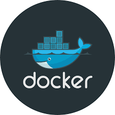
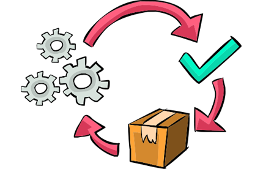
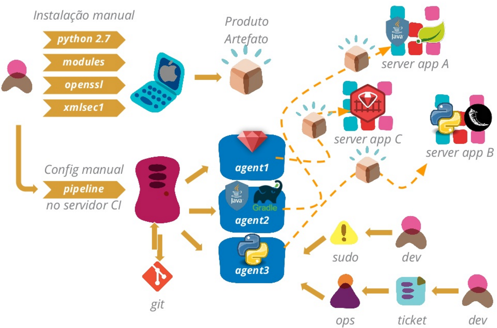
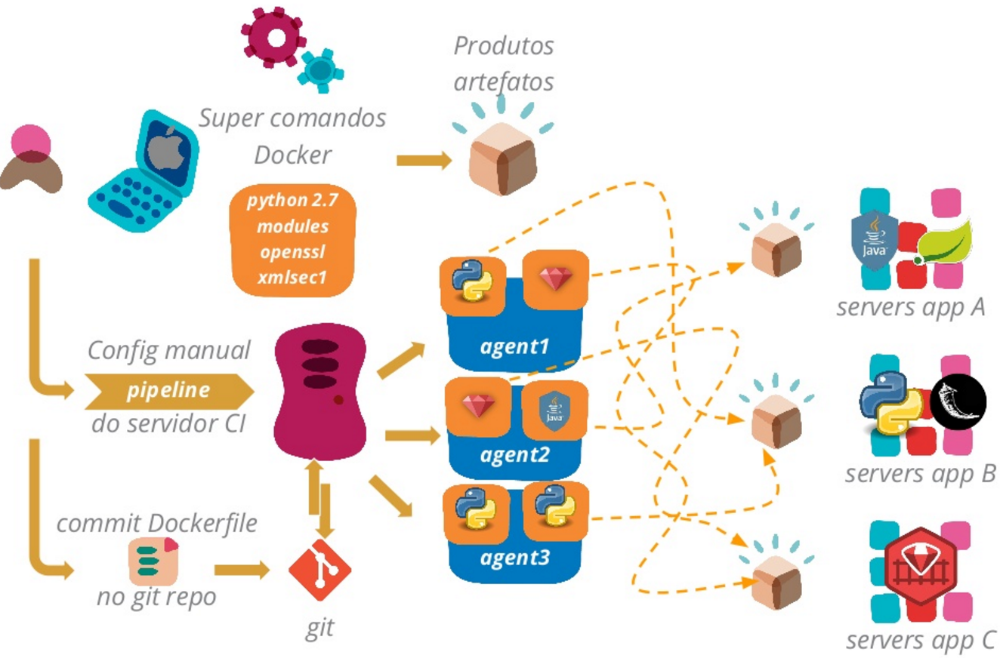
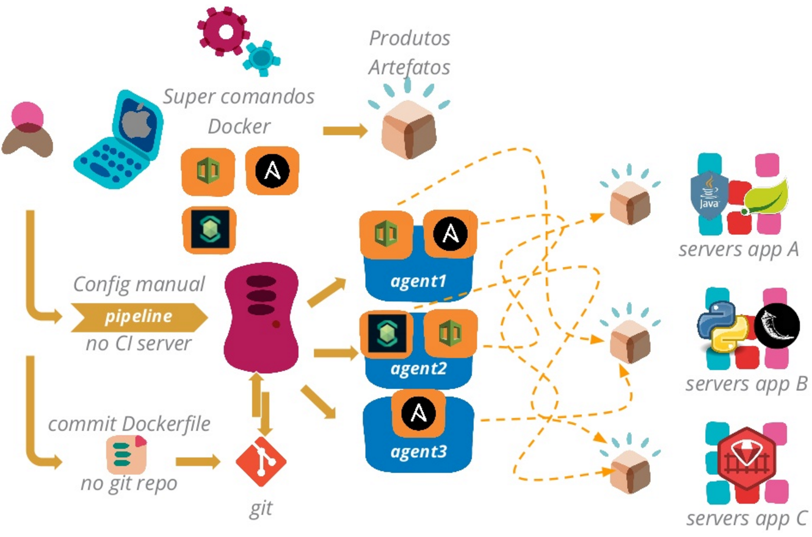
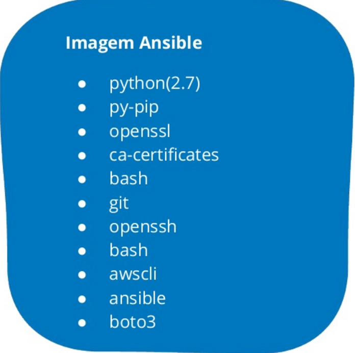
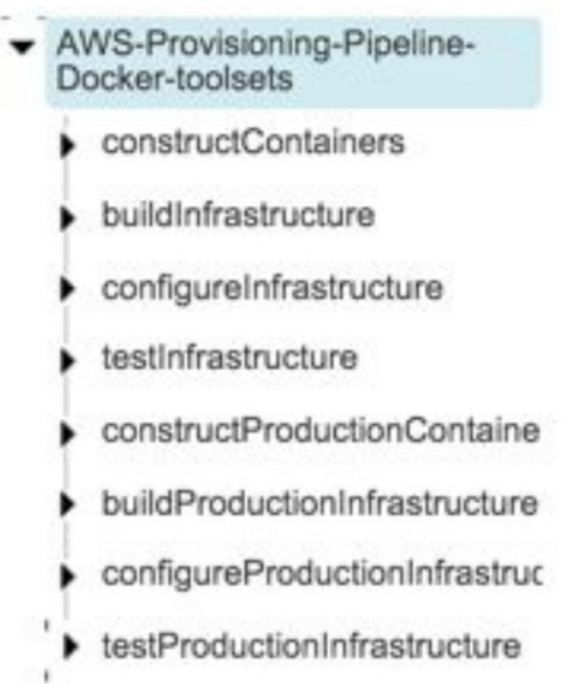

Docker como super comando
Criado por Rafael Gomes / @gomex
Quem sou eu
Rafael Gomes
- Soteropolitano
- Apaixonado por compartilhar
- Engenheiro DevOps
- @gomex
- Docker Captain
- gomex.me
- Paycertify
O que estou fazendo
Livro

- Pague quanto quiser, inclusive nada
- Não precisa saber nada de Docker
- Licenciado em creative commons
- Atualização frequente
Para baixar: tinyurl.com/docker-devel
Acompanhe os slides ou leia depois
https://tinyurl.com/docker-super
Licença:

Quem conhece Docker?
Quem conhece entrega contínua?
Motivação
Como era antes
Principais dores
- Utilizar o mesmo ambiente em desenvolvimento e produção
- Contrua uma vez, rode em qualquer lugar(Mesmo SO)
- Minimizar necessidade de modificação no agente CI
- Permitir auto serviço
- Necessidade de conhecimento especializado
Só mais uma olhada em como era
O que fizemos
Abordagem de super comando
Entregando infra como código
Exemplo de uma imagem
Exemplo da pipeline
Pros
- Baixa necessidade de administração dos agentes
- A escolha da distribuição Linux não afeta o usuário
- Minimização do custo ao compartilhar agentes
- Sem tickets
- Fácil de reproduzir localmente
Cons
- Curva de aprendizado
- Docker se torna necessário para tudo
- Aumento da complexidade dos tratamentos de problema
- problema de performace afeta todos os usuários
Lições aprendidas
- Use Make para gerenciar os comandos enormes
- Uso de shell script pra gerenciar variável de ambiente locais
- Muita atenção na ordem do Dockerfile
- Mantenha o Docker atualizado
Próximos passos
- Gerenciamento de segredos
- Melhor gerenciamento de variáveis
Duvidas?
Rafael Gomes
- Engenheiro DevOps
- gomex@riseup.net
- @gomex
- Docker Captain
- gomex.github.io